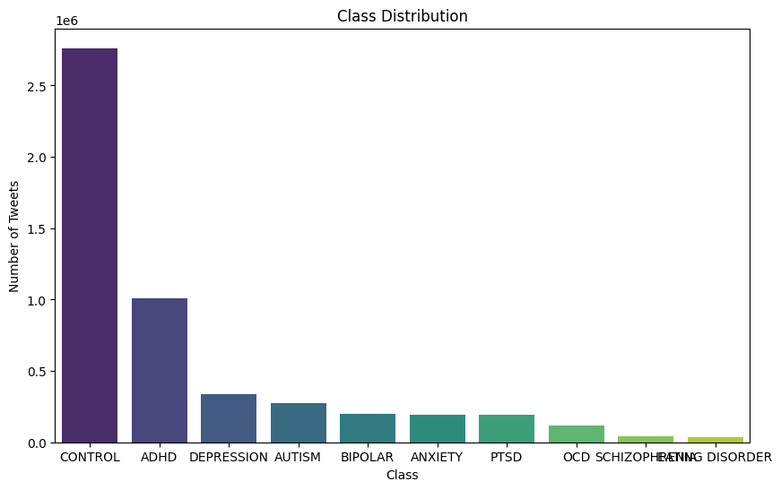

Project Overview
The major plans for the project are:
- To predict the possible diagnosis of mental health based on the data provided specific to each class and the relationships established.
- To possibly make a recommendation on immediate self-care options to cope with mental health imbalances based on reliable sources instead of being misled by random Google searches.
Technologies Used
- Python
- Knowledge Graphs
- GNN
- Neo4j
- Twitter API/Data
Project Highlights
- Scraped over 10,000 tweets for sentiment analysis.
- Built a knowledge graph to map relationships between words and mental health contexts.
- Designed a model to capture patterns.
Future Scope
Plans to expand this project include integrating real-time data analysis and creating dashboards to visualize results dynamically.